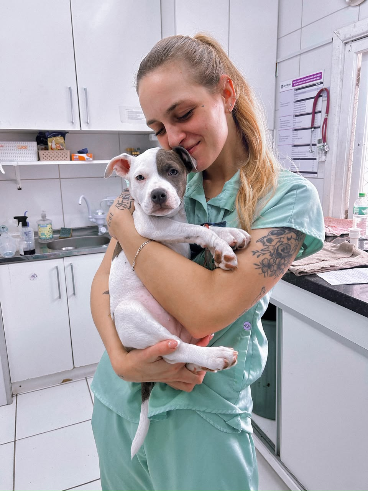
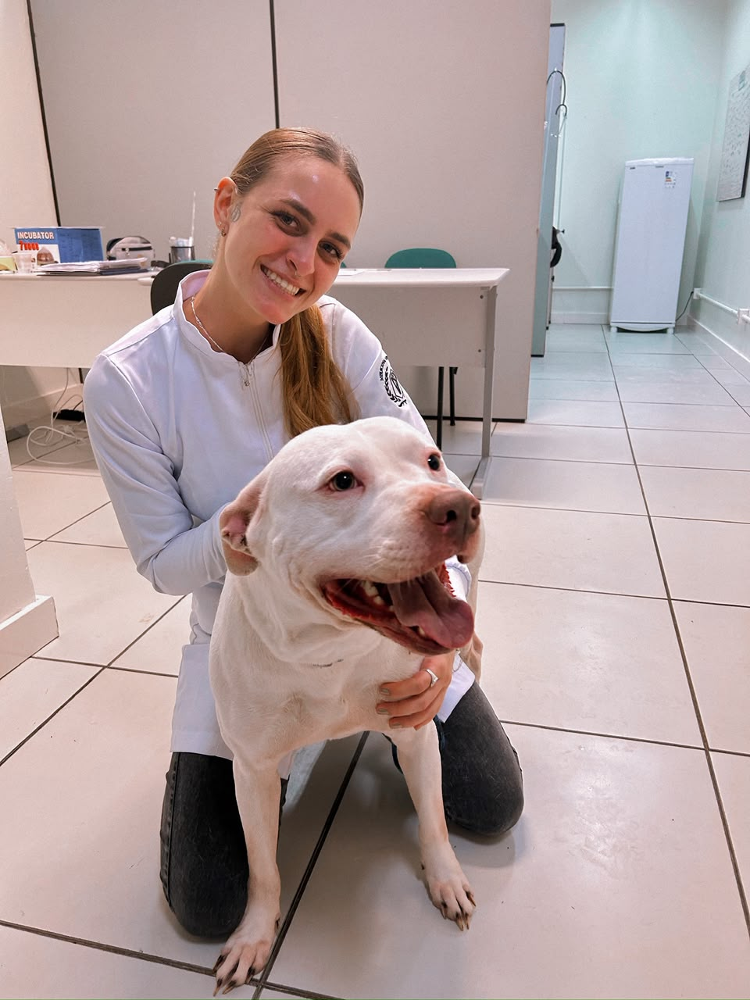
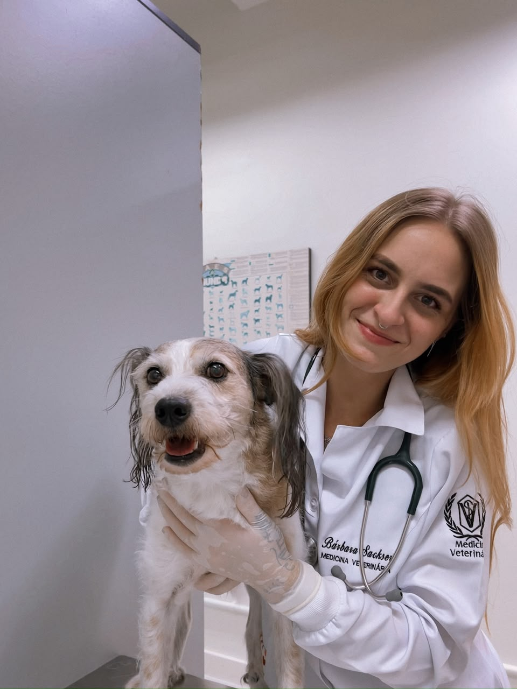

Consulta veterinária domiciliar
Avaliação clínica completa no ambiente familiar do paciente, com orientações e condutas individualizadas.
VETERINÁRIA DOMICILIAR
Atendimento personalizado para cães e gatos,
com atenção às necessidades de cada paciente.
Esteio, Sapucaia e região



SOBRE A BÁRBARA
Sou Bárbara Sackser, médica-veterinária com atuação em clínica médica de cães e gatos. Atualmente, sou pós-graduanda em Nutrição e Formulação de Alimentos para Cães e Gatos e também atuo com cannabis medicinal veterinária.
Realizo atendimentos domiciliares em Esteio, Sapucaia do Sul e região, buscando unir conhecimento científico, avaliação criteriosa e proximidade com os tutores.
Acredito que cada paciente tem sua própria história, rotina e particularidades, e que compreender tudo isso é parte fundamental de uma boa avaliação clínica.
Bárbara Sackser Médica-veterinária · CRMV-RS 25250
Serviços veterinários para prevenção, diagnóstico e acompanhamento da saúde de cães e gatos.
Avaliação clínica completa no ambiente familiar do paciente, com orientações e condutas individualizadas.
Cuidados preventivos, aplicação de medicamentos e procedimentos ambulatoriais, conforme a necessidade e avaliação veterinária.
Avaliação clínica, orientação sobre o uso terapêutico da cannabis, prescrição individualizada e acompanhamento do tratamento.
Orientações e acompanhamento remoto nas situações permitidas pela regulamentação, respeitando as limitações dessa modalidade.
SIMPLES, DESDE O PRIMEIRO CONTATO
Uma conversa para entender o que
você e seu pet precisam.
Envie pelo WhatsApp o nome, a espécie e o motivo do atendimento.
Informe seu bairro e cidade para consultar disponibilidade, valor e horário.
Após o agendamento, você recebe as informações necessárias para a consulta.
VAMOS CONVERSAR?
Para agendamentos e informações sobre os atendimentos,
fale diretamente comigo pelo WhatsApp.
Atendimento domiciliar em Esteio, Sapucaia e região.